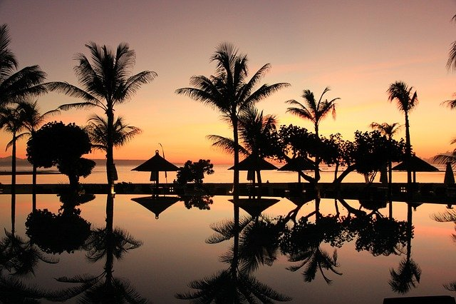

The main place in Idonesia that I would love to visit is Bali. Bali is an island that is known for it's beaches,coral reefs and forested mountains. It's a perfect mix of all the natural beauties. Bali caught my attention because it's the place that mostly pops up on my Instagram feed. It just looks so beautiful.
Bali has over 20,000 temples, making it known as the Island of Gods. There are only two seasons in Bali. The rainy season is between OCtober to April and the dry season is between May and September.
Places I want to visit
- Tanah Temple
- Tegallalang Terraces
- Ubud Monkey Forest
- Bali Safari and Marine Park
Main Dishes
- Gado Gado-
- Salad consisting of tofu, cucumbers, kidney beans, eggs
- Mie Goreng-
- Stir Fry Noodles
- Laklak-
- Cake made out rice flour
- Bur Bur Sumsum-
- Black Rice Pudding